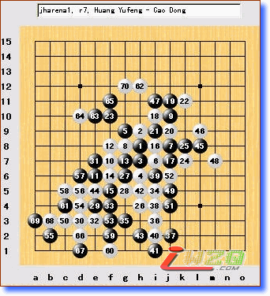

外行看热闹
#1 外行看热闹 作者：有志青年 发表时间：2007-8-29 16:46:18
原文地址：http://www.rifchina.com/Article/ShowArticle.asp?ArticleID=4429
我(天元)名份四段，我说观京沪擂台赛是“外行”，您一定要用板砖扁我，拜托，扬起你的手，等我说完了你再落下都不迟。…
首届京沪擂台赛已战八轮，我是唯一场场都在的幸运人。随着比赛的深入，越来越让我看不懂，越来越紧张，看官会说了：你又不下棋，你紧张什么？我说了你不信，我比棋手更紧张，说句严重的话，如果我要不是标准的“亚健康”的身体，没准会心脏病急发呢：）远了不说，就说刚过去在北京的第四战役吧：
北京三将曹冬六段，面对刚下火车就夺得首届“京系连珠”杯网友五子棋联谊赛特别大奖的黄宇峰的挑战，他就为何那么自信？
可我有担心的两大理由，1、从没交过手，可查对局记录几乎为零，太神秘了，2、在昨天比赛中全胜，并在比赛中逼迫刚从世锦赛载誉归来的仇云飞中盘出错，功力不一般。珠界谁人不知，曹冬善长“松月”，可这曹冬就是艺高人胆大，在接受黄的开局权后，想了数分，就坚定的开出“松月局”。黄明显早有准备交换后，你来我往十二回合，黄宇峰第二十五手实然变招，
从盘面上看黑在左上有眠三，左下有活二，右下有活二…，而白棋在我眼里似乎什么都没有，顿时，我脑子一闪，难道真的会曹冬小河沟里翻船？曹有对沪棋手双方第一次交锋输多的记录，…不敢向后想了。现场直播员梁大伟说：曹冬已经长考半个小时了，看来对25手赛前没什么准备。虽然棋钟没有钟表的嘀嗒声，但耳畔总觉得有嘀嗒声干扰。
此时黄倒悠闲地玩起手中棋子。
曹冬长考后，毅然的落下了与黑石选择相同的26手。
高手们都说曹冬掌握了先手，反正我没看出来，一子通二路的棋就这么神？果真这手棋也让黄陷入了长考，一度使曹趴在桌子上打盹。
现场直播解说员梁大伟说：黄宇峰正在进行长考，27有几种选择I5白挡下面，29走L8进行交换，还有就是G4稳健的交换，个人认为I6点的活三交换更激烈一些，黑棋也能借着L线往上发展，双方下的都比较谨慎，曹冬只要和棋将守擂成功，不过从26手看的出一点想和的意识都没有，比赛是90分钟之后1分钟1步读秒，黄宇峰27手也已经长考30分钟了，应该实在寻求黑棋进攻最强方向，现在曹冬还有30分钟，黄宇峰还有45分钟。
果真后面曹冬始终用先手控制着局面。曹走第34手时时间耗尽进读秒，“30、40、50、9、8、7、6、5、4、3、2、…”裁判的读秒声阵阵，这曹冬好吝啬偏在“2”落 “1”出前一霎那时落子…。
这样反使黄行棋缓慢，也被带入读秒。
第65手应是绝杀，曹可能也看出，也许为转移黄的视线？在下面冲几手后才无奈行70。

可黄在逼人的读秒声中他却远离胜点在下面交换后，回头落下75-79 ，送曹一个VCF，将煮熟的鸭子放飞。
终于胜利了，从外地刚赶回来的那威老师也走进棋盘问侯棋手并与大家拆棋，……。
观战一上午早已跃跃欲试的上海中坚戈翀宇六段继续上场挑战曹冬六段，这两位可是老相识了，国内大型比赛交手互有胜负，这盘可说是棋逢对手，老戈也同样将开局让给曹冬，据说，在现有规则下，高手们都愿意让对方开局，以不变应万变好掌握。这曹冬考虑5分钟后还是没有开对守擂方有利的瑞星开局，开出了黑优的丘月开局，这老戈也许是那老师带来的雀巢咖啡提神，毫不犹豫选择交换，曹变斜月双方迅速的按定式至24，又是25老戈变招。
这时现场直播解说员吴昊说：曹冬正在长考，由于25的次序与长定式有区别，所以白方长考，10分钟后选择了F5，希望还原变化，黑方几乎毫无考虑地走出27，看得出是有所准备，28是本分的一手，黑下方的空间较大了， 28走在了L7，与原定式